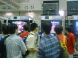
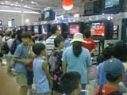
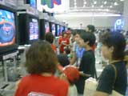
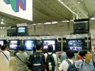
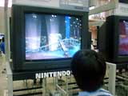

人気タイトルの続編から話題の新作まで、近日発売予定の10作品。その体験コーナーの様子をレポートしてきました。
|
NINTENDO64体験コーナー（任天堂）
page1 ・・・ page2
|
| ●罪と罰 〜地球（ほし）の継承者〜 10月発売予定 |
 コントローラーのすべてを駆使して、人類を狩る新種の生命体と戦うアクションシューティング。迫力のある美しいグラフィックとキャラクターの滑らかな動きが印象的でした。今回はプレー時間が短いためほんのサワリしか体験できませんが、重厚なストーリーにも注目してほしいそうです。
プレーしていた人にお話を聞くと、「操作が少し変わっていて面白かった」、「プレーしていて爽快感がある」との感想をいただきました。 |
| ●バンジョーとカズーイの大冒険2（仮称） 12月発売予定 |
|  前作で見事に人気キャラクターの仲間入りをはたした、クマのバンジョーとトリのカズーイ。あの名コンビが再び見せてくれます。新しいアクションも加わり、バンジョーとカズーイを別々に操作できるようになったので、前作以上にナゾときの楽しみが増えたみたいですよ。とはいえ、操作は簡単なようで、小さいお子さんも器用にキャラクターを操っていました。巨大キャラクターが登場する場面での迫力はスゴイですよ。 |
| ●マリオパーティー3（仮称） 12月発売予定 |
|  とにかく子供達に大人気！のシリーズ第３弾です。10種類のボードマップに、ミニゲームはなんと70種類とか。5分の体験プレーではとても遊び尽くせないですよね。なかには並びなおしている兄弟もいて、列の外で待っているお父さん（？）は早くもお疲れのご様子。一緒にプレーしてみてはいかがですか？ |
| ●風来のシレン2 鬼襲来！ シレン城！ 9月27日発売予定 |
|  何度でも遊べる…、というより何度も遊んでしまう「不思議のダンジョン」シリーズ最新作です。プレーするたびに変化するダンジョンでは、ひとつのミスが命とり。常にスリル満点のプレーが楽しめますよ。さすがに5分の体験プレーでは短かったらしく、途中から7分に変わっていましたね。悔しそうにプレーしている人も多かったようですが、発売されたら、ぜひ再チャレンジしてください。 |
| ●パーフェクトダーク 10月発売予定 |
 臨場感あふれるリアルな空間のなかで、新人エージェントとして過酷なミッションを遂行していく3Dガンアクション。海外で絶大な人気を誇る「007ゴールデンアイ」のシステムをさらにパワーアップさせたということで、動きの滑らかさは秀逸です。
「動きがスゴイ。気持ち良くプレーできますね」、「叫び声がいいですね」、「二人でいっしょにプレーできるのがおもしろかった」などなど、体験した人の感想も上々のようです。 |
NINTENDO64体験コーナー（任天堂）
page1 ・・・ page2
|